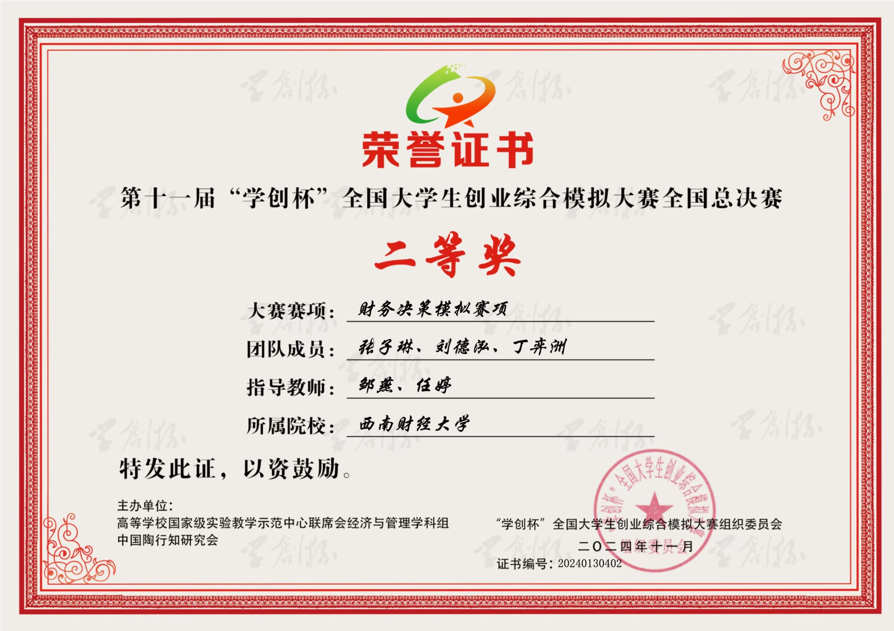
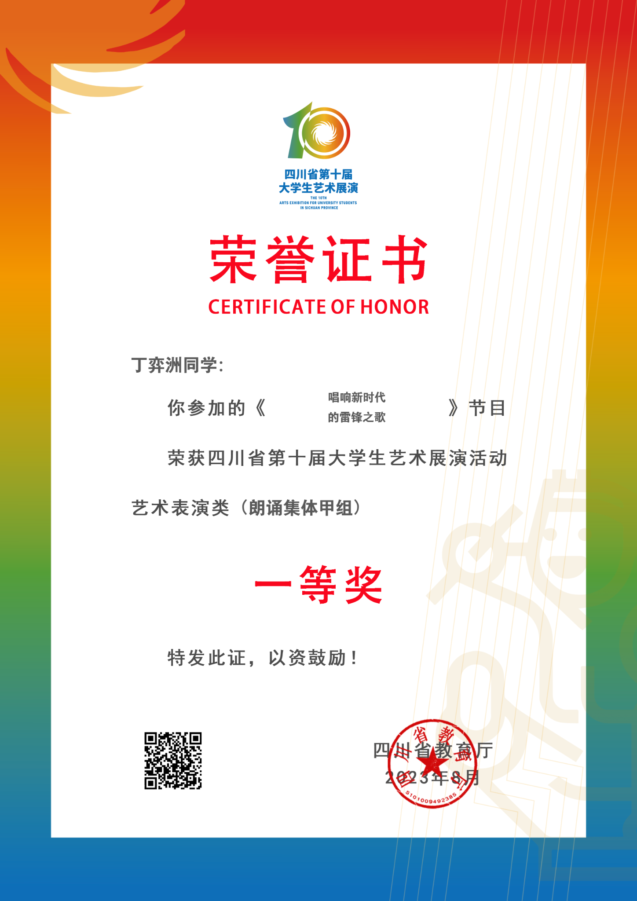
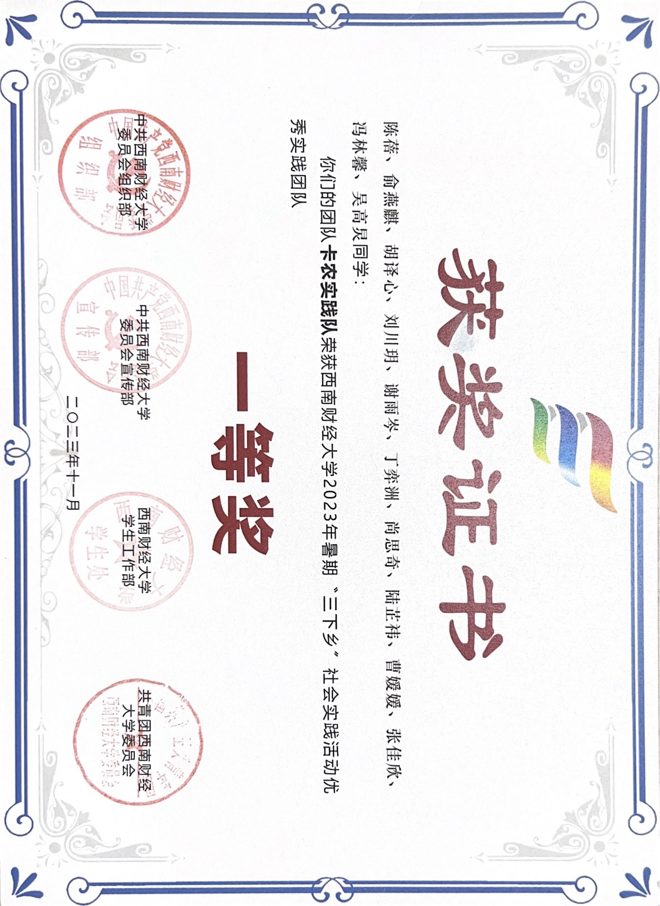

Nanyang Technological UniversityMSc in Financial Engineering
Prospective PhD applicant · Singapore
Yizhou Ding
Education
Southwestern University of Finance and Economics & University of DelawareDual Bachelor's Degrees in Financial Mathematics & Finance · GPA 90.75/100
I am an MSc student in Financial Engineering at Nanyang Technological University. My research interests are AI for economics and finance, applied economic theory, asset pricing, decentralized finance, and numerical methods. At NTU's Global Institute of Finance, Technology, and Society (GIFTS), I work with Prof. Lin William Cong on an equilibrium agent-based model for studying LLM traders and on a benchmark of LLM agents' on-chain economic decisions, and with Prof. Mingzhe Li on a pilot study of dispute prevention in prediction markets. At Nanyang Business School, I build the employment panel for Prof. Samia Badidi's study of how AI reshapes sell-side analysts' careers. My earlier work with Prof. Pin Lyu develops a provably stable high-order scheme for nonlinear option pricing; the manuscript is under review.
AI for Economics and Finance · Applied Economic Theory · Asset Pricing · Decentralized Finance · Numerical Methods
Mandarin (native) · English (IELTS 7.5, GRE 326)
Equilibrium and agent-based modeling · empirical analysis · machine learning · numerical PDEs · Python, MATLAB, R, C++, SQL
Reference
Fei Xie, Prof.
Instructor, FINC312 Intermediate Financial Management
Chaplin Tyler Professor of Finance · Associate Chair, Department of Finance
Faculty Research Director, Weinberg Center for Corporate Governance
University of Delaware
Research
My current research uses equilibrium models, agent-based simulation, and large-scale data to study how AI agents make decisions in financial markets and on chain, how prediction markets can be designed to prevent disputes, and how AI reshapes analysts' careers. My earlier work develops numerical methods for nonlinear option pricing.
Manuscript
A Variable-Step Crank–Nicolson and High-Order Compact Scheme for a Nonlinear Black–Scholes Type Equation
Supervisor: Prof. Pin Lyu, School of Mathematics, SWUFE
Pricing derivatives with counterparty credit risk and funding costs leads to a nonlinear Black–Scholes equation. With my coauthors, I designed a linearized scheme, variable-step Crank–Nicolson in time and fourth-order compact in space, that needs one linear solve per time step without nonlinear iteration. We proved unconditional stability and O(τ² + h⁴) convergence by the energy method, including under negative interest rates, and verified the rates in MATLAB experiments on European options. I led the preparation of the manuscript.
Read manuscriptCurrent research
AI Agents in Financial Markets: Simulation and Equilibrium Validation
Research Assistant to Prof. Lin William Cong
I designed an equilibrium agent-based model in which one call-auction market and one damped fixed-point solver are shared by swappable decision engines: exact best response, learning, hybrid LLM, and fully LLM. Exact best responders recover the Kyle equilibria, so deviations can be traced to the decision engine rather than to the market design.
I built its validated base: a multi-group Kyle (1989) equilibrium for 19 investor compositions under two conducts, strategic and price-taking (homotopy, damped Newton), and an ABM of CARA traders learning by recursive least squares that recovers it in 38 of 38 cells (maximum forgone certainty equivalent 0.08%). Fully-LLM markets have been solved to a statistical fixed point in 16 economies under both conducts (13K LLM calls; 30 of 32 cells converge). Preliminary results: LLM traders told to be strategic still largely ignore their price impact, trading near the competitive rule in 12 of 14 economies.
Financial AI Benchmarks: Economic Decisions and On-Chain Execution
Research Assistant to Prof. Lin William Cong
We are designing a benchmark that tests whether LLM agents choose economically sound on-chain actions, not merely execute given ones. It covers four DeFi decision domains (asset allocation, lending and risk management, liquidity provision, and protocol selection) at four difficulty levels, and it scores agents by counterfactual execution on mainnet forks rather than by LLM judges. I built the lending-domain foundation for Aave V3, Compound III, and Morpho Blue from contract code.
AI for Prediction-Market Design and Dispute Prevention
With Prof. Mingzhe Li, Great Bay University
In a pilot study, I rebuilt Polymarket's on-chain history (2.38M markets, oracle disputes, and clarifications) from a Polygon archive node. From launch-time text alone, Mantel–Haenszel odds ratios over 407K markets show that contingency clauses cut dispute odds by about 70%, while “announced/confirmed” triggers raise upheld disputes 2.3×. I also built a matched, time-split benchmark for LLM pre-launch screening.
How AI Reshapes Sell-Side Analysts' Careers
Research Assistant to Prof. Samia Badidi
I mapped 63 target analyst titles onto Revelio's 17K-category role taxonomy, keeping 777 categories, each cross-checked against O*NET. I then built the WRDS employment panel in SQL and Python, filtering 397M raw records by role, industry (NAICS 52, RICS), seniority, intern, and outlier rules into 12.7M positions of 8.2M people at 316K finance firms (2010–2026). An audit of role labels against raw titles, run through live WRDS queries, found a 16% mismatch for the 17K-category label versus 81% for the 1.5K-category one.
Applied research
Short-horizon volatility returns versus option time decay
I tested whether intraday gamma gains of long straddles offset theta decay, using minute-level data for 10+ Chinese commodity options and a liquidity-based contract-selection rule. Mapping intraday volatility seasonality in about 20 commodity futures showed that the straddle paid off for night-session crude oil, but not for PTA. The study was published as a two-part article on Galaxy Futures' WeChat account.
Experience
Research Positions
Global Institute of Finance, Technology, and Society (GIFTS), NTU
AI agents in financial markets; financial AI benchmarks for on-chain decisions; AI for prediction-market design, with Prof. Mingzhe Li (Great Bay University).
School of Mathematics, SWUFE
Numerical methods for nonlinear option pricing; first-author manuscript under review.
Industry
Shenyin Wanguo (SWS) Futures
Research Institute · Shanghai
- Tested whether macro data explain China's 10-year government bond yield beyond Nelson–Siegel factors: the residual is persistent and Granger-caused by CPI and macro surprises, and rolling XGBoost on 30 macro variables explained 52% of it out of sample.
- Conducted an event study of four extreme ETF-option rallies (2015–2024) on lead–lag, volatility, and tail losses.
- Drafted reports for the institute's quant series on yield-curve models and algorithmic stablecoins.
Galaxy Futures
Derivatives Business Headquarters · Shanghai
- Tested whether intraday gamma gains of long straddles offset theta decay on minute-level data for 10+ Chinese commodity options; published as a two-part article on the firm's WeChat (see Research).
- Built a local LLM (DeepSeek-R1-7B) pipeline forecasting rebar futures direction from forum text, price–volume data, and an analyst framework; selective prediction (abstaining on low-confidence calls) raised the hit rate from 57.5% to 60.0% over 279 trading days.
- Compared hedges for rebar procurement: an option collar cut cost variance by 97.7%, against 41.7% for a futures hedge.
Teaching
Database Design & Implementation MISY330
Supervisor: Prof. Leting Zhang · University of Delaware
Supported course delivery in relational database design, SQL, and data management; guided assignments and team projects, troubleshot implementations, and contributed to grading and feedback preparation.
Presentation
Automatic Event Scheduling Based on LLMs
Built a prototype that connected an SQL venue database with an LLM's interpretation of natural-language constraints for multi-constraint event planning. The team localized a DeepSeek model with Ollama and developed a Flask interface. The instructor selected the project as an exemplar for future cohorts.
View Nectar presentationLeadership
University Broadcasting Station
Station Manager
SWUFE Study Abroad Club
Student Chairman
Community Service
Data Empowerment and Technology-Enabled Agriculture
Conducted field visits, educational outreach, and digital-commerce workshops in rural communities in Jinchuan County. I led the writing and documentation of the team's work; the field report was published by China Youth Network and featured by local government media. The project received the University First Prize.
Read the published field reportRecognition
Selected awards and scholarships
A concise record of academic, competition, artistic, and community recognition.
“Xuechuang” Cup
National Second Prize
10th Arts Exhibition of Sichuan Province
Provincial First Prize
Tri-Service to the Countryside
University First Prize
Academic Scholarship
Top 10%
Leadership Scholarship
Awarded in each of four years
Merit Student & Outstanding Student Worker
University recognition
View selected certificates


